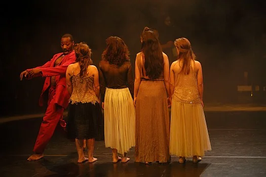
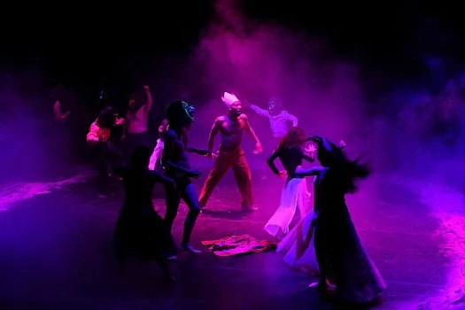
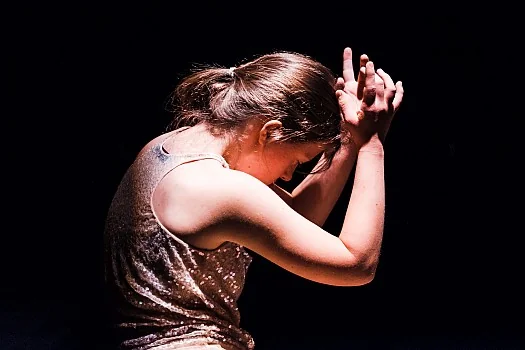

RambaZamba Theater
RambaZamba Theater is a 1990 established inclusive theatre in Berlin that works with both disabled and non-disabled actors and actresses. It stages around 100 shows a year and regularly shows its pieces on national and international festivals.
- Dance, movement theatre
- 54 minutes
- German
Synopsis
Together with choreographers and dancers Sara Lu und Rubén Nsue the RambaZamba ensemble discovers the life and myth of Jean-Michel Basquiat. The piece investigates the contradictions of success and reality in a shimmering space accompanied by jazzy hip hop sounds by Leo Solter and Matthias Geserick.
Jean-Michel Basquiat, an American artist who died at the age of 27, became an icon of the 1980s counterculture. This production explores his artistic journey, analyzing the tension between commercial success and authentic artistic expression. Through movement, music and physical theatre, the ensemble transports the audience into a world full of energy, contradictions and creativity.
"A shimmering space full of contradictions - between success and reality, between myth and human being."
Video (YouTube)
Gallery



About the ensemble
RambaZamba Theater was founded in 1990 in Berlin as one of the pioneering inclusive theatres in Germany. The ensemble works with disabled and non-disabled actors, creating a space for authentic artistic expression and breaking stereotypes associated with disability.
The theatre stages around 100 performances annually, regularly participating in national and international festivals. The ensemble's work focuses on exploring new theatrical forms, combining various artistic disciplines - from dance and physical theatre to experimental music.
In the performance Heroes. Mythos Basquiat, just for one day. the ensemble collaborated with choreographers Sara Lu and Rubén Nsue, creating a production combining dance, hip-hop and physical theatre. Music for the performance was composed by Leo Solter and Matthias Geserick, and the set design was created by Jacob Höhne.
Festival ensembles
Expand ensemble list
Festival partners